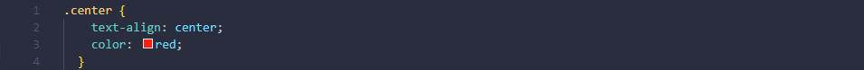
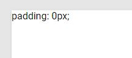

Pane oma teadmised proovile HTML/CSS teemal
HTML CSS Kursus
Sissejuhatus
HTML-i (HyperText Markup Language) kasutatakse veebilehtede kujundamiseks, kasutades märgistuskeelt. HTML on hüperteksti ja märgistuskeele kombinatsioon. Märgistuskeelt kasutatakse tekstidokumendi määratlemiseks märgendis, mis määratleb veebilehtede struktuuri. Seda keelt kasutatakse teksti märkimiseks (arvuti jaoks märkmete tegemiseks), et masin saaks sellest aru. Enamik märgistuskeeli (nagu HTML) on inimloetavad. Keel kasutab silte, et määratleda, milliseid manipuleerimisi tekstiga tuleb teha.
CSS-i (Cascading Style Sheets) kasutatakse stiilide rakendamiseks veebilehtedele.
Seda kasutatakse veebilehtede esinduslikuks muutmiseks.
CSS stylesheet-id võimaldavad veebilehtedel stiile rakendada.
See võimaldab teha iga veebilehe kujundust HTML-ist sõltumatult.
Stiil on iga veebisaidi oluline omadus.
See suurendab veebisaidi standardeid ja üldist välimust, mis muudab kasutajal sellega suhtlemise lihtsamaks.
Kursuse läbimiseks on soovitatav luua endale VS Code programmis HTML ja CSSi kirjutamiseks mugav keskkond(hõlbustavad extensionid). Abiks on alltoodud video.
source: https://www.youtube.com/v/4NfFFsQC77M
Inspect element veebilehtedel
Inspect element võimaldab ajutiselt redigeerida veebisaidi koodi visuaalset osa. Elementide kontrollimise teel koodis tehtud muudatused ei ole püsivad ja kustutatakse veebilehe uuesti avamisel (arvestab ka lehe värskendamist). Meie puhul on see kõige kasulikum selleks, et näha, kuidas koodis tehtavad muudatused lõpptulemust mõjutavad. Tavaliselt avatakse see kas vajutades klaviatuuril klahvi F12 või klõpsates hiire paremat nuppu ja valides avanevas kontekstimenüüs “Inspect element”.
HTML Meta tags
Teksti formaatimine
HTML sisaldab mitmeid elemente erilise tähendusega teksti määratlemiseks. Selliseid elemente on lihtne rakendada teksti peal.
Bold
Italic
Subscript / Superscript
Paragraph
Span
Lists
HTML atribuudid
HTML atribuudid pakuvad lisainfot elementidele. Sellised atribuudid võimaldavad manustada linke, lisainfot ja CSS stiilikoodi. Viimase puhul oleks aga soovitatav kasutada CSS faile ning linkida need HTML failiga, et hoida projekt puhtama ning selgemini arusaadavana.
Kõige laiemini kasutatavad HTML atribuudid:
href atribuut on üldiselt kasulik hüperlingi elemendi sees. href atribuut määrab üldiselt kuhu element kasutaja suunab. Href on äärmiselt kasulik HTML failis CSS failide linkimisega.
src atribuut viitab elemendi allikale. Sellega on võimalik sisestada oma lehele pilte, videosid ja muid sisufaile. Src võib viidata otse veebilehesisesele manusele või veebilehevälisele manusele, milleks võivad olla pildid, mis on välistel veebilehtedel olemas. Kindlam on src puhul viidata sisule, mis on veebilehe enda failides manustatud.
alt atribuuti on mõtekas kasutada lisana src atribuudile. alt kuvab sisu puudumise puhul tekstilõiku, mis võib kirjeldada üldiselt src sisu.
Lang atribuut määrab keele, milles leht kuvatud on. See on mõeldud otsingumootorite ja brauserite abistamiseks.
title atribuut on kõige kergem viis lisada elemendile lisainfot. Kui sa kuvad infot oma kursoriga siis title abil on võimalik kuvada lisainfot, et abistada kasutajat ning edastada infot ilma veebilehe üldist ehitust muutmata. Need infotükid on üsna lühikesed ning ei ole väga sisukad, aga siiski kasulikud meeldivama kasutajakogemuse loomiseks.
NB! Mitte segamini ajada
style atribuut võimaldab kirjutada CSS koodi HTML sees. See on mugav väikeste elementide puhul, millel pole palju stiiliparameetreid. Muul juhul on mõistlikum eraldada HTML ja CSS failid, et oleks kergem veebilehe struktuurist aru saada ning muutusi läbi viia.
File path kirjeldab faili asukohta veebisaidi kaustastruktuuris. Kui veebilehe kaustas on olemas images folder, kus on manustatud kõik veebilehe pildid, siis on võimalik sellele viidata src sees järgnevalt:
Quiz
CSS mõõtühikud
CSS-i mõõtühikud jagunevad peamiselt kahte kategooriasse:
Absoluutsed mõõtühikud on ühikud, mis on fikseeritud ning kindla kujutamissuurusega.
Sellised mõõtühikud on kasulikud kindla meediumi jaoks, näiteks printimise formaadi loomiseks.
Selliseid mõõtühikud on üsna mugavad algelistele lehtedele, millel pole vaja end kohendada mitmete meediumite jaoks.
cm - centimeter
mm - millimeter
in - inch
px - pixel
Relatiivsed mõõtühikud on ühikud, mis on relatiivsed suhtes oma ümbrusega. Sellised mõõtühikud on võimelised automaatselt elemendi suurust muutma ning kohendama erinevate lehe suuruste jaoks, et element oleks alati relatiivselt samas kohas. Seetõttu on need üsna laialdaselt kasutuses efektiivses veebidisainis, mis võimaldab lehel sobitada end erinevatele meediumitüüpidele paremini kui absoluutsed mõõtühikud.
em, rem - ühikud, mis on suhtes elemendi font suurustega. Ühikud on praktilised skaleeritava veebilehe loomisel.
vw, vh - ühikud, mis on protsentuaalselt suhtes viewporti suurusega.
% - ühik, millega saab määrata elemendi suurust container-i sees.
Responsive veebikujundus
Responsive ehk kohanduv veebileht on leht, mis kohendab lehe kujutust vastavalt meediumile. Sellised lehed kohanduvad automaatselt ning on sobilikud erinevate ekraani suuruste ja vaateavade jaoks. Kohanduva veebilehe loomiseks on mitmeid tasandeid. Peamine tag, mis on aluseks kohanduvale veebilehele, on vaateava põhjal võetud mõõtmed. See tag seab veebilehe sisu vastavusse vaateava suurusega, täpsemalt laiusega.
Lisaks
Näiteks on veebilehel konteiner, mille laiuseks on terve vaateava laius. Selle sees võib olla sektsioon, mille laiuseks on määratud
Kui veebileht on relatiivne vaateava laiusega, siis lehe vaateava muutes, muutub ka loodud sektsiooni suurus. Antud sektsioon on alati pool vaateava laiusest.
Lisaks width parameetrile oleks mõistlik ka lisada näiteks min-width: / max-width: et antud elemendid ei muutuks liiga väikseks või suureks spetsiifilistes olukordades.
Kohanduva teksti loomisel tuleb kasuks vw ja vh (viewport width ja viewport height). Need parameetrid sätivad teksti font-i suuruse selliseks, kus 1vw/vh on 1% vaateava laiusest/pikkusest. See tagab, et tekst oleks loetav ja sama suurusega igas olukorras. Veebilehe paragraafide ja tekstisisu puhul on siiski mõtekas määrata kindel suurus.
Piltide, videode manustamine
Piltide, videote ja muu sellise sisu manustamine HTML faili on võimalik kahel kombel. Manustada sisu projekti otse, või viidata välisele allikale, kust sisu on võetud. Kui vajalikud sisufailid on projekti folderis olemas, siis on võimalik luua konteiner sisu jaoks, lisada viide allikale, kust sa tahad videot või pilti võtta. Video puhul on võimalik lisada lisa atribüüte nagu controls, autoplay ja muted. Sisu on võimalik ka internetist enda lehele manustada, linkides sisu allikas oma projektiga.
Linkimine
Kindlasti oled varem olnud olukorras, kust ühelt veebisaidilt mingile teisele spetsiifilisele saidile saab vaid mõne klikiga. Näiteks tahes YouTube-i minna, tuleb klikkida järgnevat hüperlinki: www.youtube.com . Seda kõike võimaldab HTML-s kasutusel olev linkimine.
Et luua HTML-s hüperlinki, tuleb kasutusele võtta ankruelement ehk anchor element. Ankruelemendi märgiseks on ning seda kasutades ongi võimalik luua hüperlink, et liikuda ühelt dokumendilt teisele. Kas pole mugav?
Ankruelemendi kasutus koodi kirjutamisel näeb aga välja selline:
See tekst kuvatakse
Atribuut href määrab ära täpse dokumendi aadressi, kuhu link viib. Näiteks tahes teha hüperlink jällegi YouTube-i, peaks tegutsema umbes järgnevalt:
ning tulemus veebilehel oleks järgnev:
Mine YouTube!
Nii ankrut ning ka igasugust muud teksti saab HTML-s modifitseerida, kasutades selleks CSS-i. Teksti muutmiseks tuleb on olemas erinevaid võimalusi:
Teksti suuruse muutmiseks oleme harjunud näiteks Word-s kasutama tööriistariba, kus on lihtne + ja - abil vastavalt kas teksti suurust suurendada või vähendada. Tehes enda veebilehte on võimalik teksti suurust seadistada kasutades järgnevat rida:
(number) on teksti suurus, mida soovitakse saavutada.
Fondi muutmiseks oleme samuti harjunud kasutama Word-s tööriistariba, aga enda veebilehte tehes on võimalik kasutada järgnevat rida:
(name) on vastava fondi nimi, mida soovitakse kasutada.
Fondi värvi muutmiseks on võimalik kasutada järgnevat rida:
(color) on värv, milles soovitakse teksti näha.
Fondi paksuse muutmiseks on võimalik kasutada järgnevat rida:
(weight) võib olla nii number, kui ka sõna (nt: normal, bold, lighter), mis määrab, kui paks tekst on.
NB! font-weight kasutamise võimalused sõltuvad ka sellest, milline on font ise.
Fondi stiili muutmiseks on võimalik kasutada järgnevat rida:
(style) on vastava stiili nimi, mida soovitakse kasutada.
Koodi näide koos kõigi ülaltoodud tööriistadega:
 Võimalusi teksti muutmiseks leidub veel palju.
Võimalusi teksti muutmiseks leidub veel palju.
Quiz
Pane oma teadmised proovile HTML/CSS teemal
CSS Selector
CSS-kood sisaldab endas mitu erinevat osa.
Üks neist on valija ehk selector, mis aitab täpselt märgistada, millisele HTML- elemendile mingit stiili lisada tahame.
Selectoreid on olemas mitme erineva tüübi näol:
Element selector valib HTML-i elemendi selle nime järgi. Näide, kus kõik <p> elemendid lehel keskele joondatud ning punast värvi tehtud:
ID selector ehk ID valija all antakse igale HTML-märgendile ID ja selle ID jaoks määratletakse stiil. Sama ID-d ei saa määrata mitmele HTML-sildile, mistõttu on ID selectori kasutamine efektiivne juhul, kui konkreetse HTML-i jaoks on vaja ainulaadset stiili. CSS-s määratletakse see # abil. Näide:
Class selector ehk klassi valija all määratletakse klass ära iga HTML-märgendi jaoks ning selle klassi jaoks määratletakse omakorda stiil. Mitmele HTML-sildile saab valida sama klassi ja seega saab CSS-i stiili uuesti kasutada, mis teeb inimesele asja väga lihtsaks. CSS-is määratletakse see punktiga (.). Näide:

Attribute selector ehk atribuudi valijat kasutatakse määratud atribuudiga elementide valimiseks. Määratud atribuut on kantsulgude [ ] vahel.
Pseudo-class selector ehk pseudoklassi valijat kasutatakse elemendi erilise oleku määratlemiseks. Näiteks saab seda kasutada nii, et element on mingit kindlat stiili vaid siis, kui kasutaja on hiirekursoriga selle peal. Samuti annab see võimaluse külastatud ja mittekülastatud veebilingid erineva stiiliga kuvada jne. Näide koodist, mille järgi on nupp erinevat stiili juhul, kui selle peal kursoriga liikuda.
Padding ja Margin
Padding ja margin on atribuudid, mis loovad ruumi elemendi sisu jaoks ja elemendi ümber.
Padding atribuute kasutatakse ruumi loomiseks elemendi sisu ümber mis tahes määratletud piiride sees.
Kui on kast, mille sees on teksti sisu, siis padding atribuudi loomine loob nö buhvri sisu ja elemendi vahele.
See loob silmale meeldivama ning soliidsema struktuuri veebidisainis.

Margin atribuute kasutatakse ruumi loomiseks elemendi väljapool. Margin loob ruumi kahe elemendi vahele, ehk on buhvriks elementide vahel. See on kasulik, et eraldada elemente omavahel ning omakorda elementide gruppe.
CSS properties
CSS-is on olemas veel palju atribuute, mille kaudu saab elemente muuta. Näiteks on olemas:
Width ja height ehk laius ja kõrgus on ühed põhilised atribuudid, et määrata elemendi laiust ja kõrgust. Antud atribuudid aga ei sisalda paddingut, bordereid ega ka margineid. Need määravad elemendi täidises, äärises ja veerises oleva ala kõrguse/laiuse.
Background ehk taust, background atribuudi alla käivad veel color, image, position, size, repeat, origin, clip ja attachment, millega tausta modifitseerida saab.
Border ja border-radius ehk ääris ja äärise raadius. CSS-i äärise atribuudid võimaldavad määrata elemendi äärise laiuse, stiili ja värvi, border-radius atribuut määrab elemendi nurkade raadiuse (võimaldab lisada elementidele ümaraid nurki).
Opacity ehk läbipaistmatuse atribuut määrab elemendi läbipaistmatuse taseme. Tase kirjeldab läbipaistvuse taset, kus 1 ei ole üldse läbipaistev, 0,5 on 50% läbipaistev ja 0 on täiesti läbipaistev.
Z-index ehk z-indeks määrab elemendi virna järjekorra, z-index töötab ainult paigutatud elementide puhul. Suurema indeksiga element on teise peal.
Element alignment
Text-align ehk teksti joondamise atribuuti kasutatakse teksti horisontaalse joonduse määramiseks.
Tekst võib olla vasakule, paremale või keskele joondatud.
Järgnev näide näitab keskele ning vasakule ja paremale joondatud teksti (vasakjoondus on vaikimisi, kui teksti suund on vasakult paremale):
CSS-grid või CSS-grid layout pakub ridade ja veergudega ruudustikupõhist paigutussüsteemi, mis muudab veebilehtede kujundamise lihtsamaks.
Grid layout koosneb põhielemendist koos ühe või mitme alamelemendiga. Näide koodist:
CSS-is on palju atribuute, millega mõnda ruudustikku kujundada (column-gap, row-gap, grid-area, grid-column, grid-gap, grid-template jne).
CSS Flexbox (Flexible Box) on sarnane CSS-gridiga.
Kõige olulisem erinevus kahe paigutusmooduli vahel on see, et CSS Flexbox on ühemõõtmeline paigutusmudel, samas kui CSS Grid on kahemõõtmeline.
Ühemõõtmelisena tähendab see, et Flexboxi konteiner saab hõlbustada asjade paigutamist kas ritta või veergu.
CSS-grid seevastu võib hõlbustada üksuste korraga risti ja alla paigutamist, mis tähendab, et saate töötada mööda kahte telge, vertikaalselt ja horisontaalselt, mida CSS Flexbox teha ei saa.
Flexbox teeb arvutused igas reas ükshaaval, arvestamata teiste ridadega, ja nii saab reguleerida igas reas joondust. CSS Grid seevastu annab teile paigutuse juhtelemendid, mis töötavad ideaalselt kahes suunas.
Flexbox on põhimõtteliselt sisupõhine. See vaatab sisu ja kohaneb sellega. Grid toimib rohkem paigutuse tasemel ja on konteineripõhine, ehk dikteerib struktuuri.
 source: https://f36.contentful.com/components/grid
source: https://f36.contentful.com/components/grid
CSS grid ja flexboxi kinnistamiseks soovitame teha läbi bite-size levelitega mängud(45min):
Quiz
Pane oma teadmised proovile HTML/CSS teemal
Tagasiside
Saada meile tagasisidet kursuse kohta!